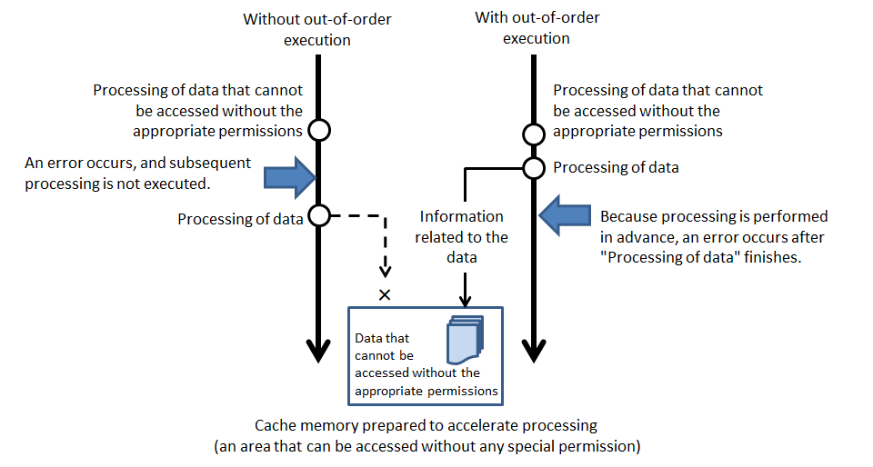
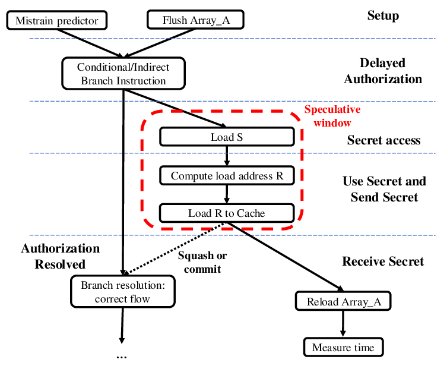

Intel SGX demystified — Part 2: CPUs and their vulnerabilities
Demystifying SGX— Part 2 — Understanding CPUs and their vulnerabilities
When I first heard about researchers "breaking into" secure enclaves, I imagined a "Mission Impossible" style operation where the researcher dodges laser beams, breaks some cryptography, and runs away with the top-secret list of undercover agents.
It turns out that the researchers are CPU geeks with a deep knowledge of CPU Microarchitecture (yes, we’ll demystify that as well) who use highly subtle combinations of performance features, or undocumented buffers, to craft scenarios where a bit of data from a program stays residual somewhere in the CPU for a couple of nanoseconds, enough for another program to read it.
This is the second article in a three-part SGX series. The first part describes how SGX works by focusing on the security features of CPUs. In this part, we'll look at what makes CPUs fast and how those optimisations were used to break the isolation guarantees.
The race for performance
The main attributes general-purpose CPUs are judged on commercially are cost, speed and power consumption. Since multi-core CPUs became dominant, speed is further broken down into "single-threaded" and overall speed.
Based on the use case, each of these attributes will matter more. For example, for a high-end laptop, it will be performance and power consumption. For an industrial server, it will be cost and speed. For some servers, it will be "single-threaded" performance, etc.
Choosing the balance between these three attributes imposes severe constraints on CPU manufacturers.
What makes a CPU fast?
Let's start with the definition of speed. There are various benchmarks out there to measure it. The essence is that the CPU must finish a task, or multiple simultaneous tasks, in the shortest amount of time, at least compared to the competition. This translates into webpages loading faster, games running smoother, code compiling more quickly, etc.
Early on, the property typically associated with CPU speed was the CPU clock rate. For example, the 8086 worked at 5–10Mhz. Recent CPUs are working at over 5GHz. The clock rate represents the internal unit of time of the CPU, basically how many "things" it can do in a second. While this is important, the "things" bit is more important. The misconception that CPU clock rate is the only stat that matters even has a name, the "Megahertz Myth".
"Instructions per second" is a better measure of CPU speed. It equates "things" with CPU instructions. Notice in the Wikipedia link that the 8086@5Mhz was doing 0.3 MIPS (Million Instructions per Second), while the AMD Ryzen is doing 2,356,230 MIPS at 4.35 GHz. So for a 1000x increase in clock rate, the overall CPU speed went up almost 10 Million times. More relevant to our topic, a better measure is to look at the "instructions per clock cycle per core" metric, which went from 0.066 for the 8086 to 10.96 for the i9.
CPUs currently execute 160 times more instructions per clock cycle per core than in 1978 (the 8086). This was achieved not only by hardware improvements but primarily by clever optimisations on how data is processed.
Tradeoffs
Achieving CPU performance is probably one of the most complex tasks in all engineering. So I'll only mention a few tradeoffs and limitations, primarily due to the limits of materials and physics.
Increasing the CPU clock rate, which is the internal unit of time of the CPU, is limited mainly by heat dissipation. The higher the frequency, the more current flows through the internal circuits and the hotter the CPU gets until it can burn. This is the reason why gamers invest so much in special cooling.
Increasing the circuit size also hits limitations because a lot of information must travel quickly through the CPU. So the "velocity factor" starts becoming significant because it introduces latency, and information cannot travel between the relevant circuits during a clock tick. That is why "transistor size" has become an important topic, although that is also becoming a myth.
Another important consideration is that different components have significantly different operating speeds. For example, the CPU works very closely with the memory chip. The issue is that receiving information from memory takes a very long time when measured from the reference frame of the CPU. Imagine sending an email with an urgent information request which you need in 10 minutes and receiving the reply in days. If you don't have any other tasks, you must stay idle until you receive a response.
Given all this pain CPU manufacturers have to endure, like fighting the laws of physics, the first directive of CPU design is that "valuable CPU resources should stay idle as little as possible".
Techniques to reduce idle time
After all this context, it's finally time to introduce the relevant optimisation techniques.
The 8086 came with "instruction pipelining", an instruction-level parallelisation technique designed to keep as many of the available circuits busy all the time. Following the same principle as an assembly line, the CPU can execute multiple basic instructions in parallel if they use different circuits. Furthermore, because instructions are sequences of small elementary operations that can be executed in hardware, the CPU can arrange them such that outputs of some operations are available just in time as inputs for others. However, in the case of the 8086, this mechanism was primitive, only splitting up fetching from execution.
An improvement which came with the NexGen Nx586 is "out-of-order execution" (OOE). The CPU transforms a linear sequence of instructions into multiple sequences that can be executed in parallel by looking at the dependencies between the inputs and outputs. Another way to look at it is that a single-threaded program can be transformed into multiple threads, where each can be scheduled independently. This technique is potent even on a single-core CPU because each sequence typically has idle periods waiting for memory access. Instead of keeping the entire CPU idle, the scheduler can execute the other out-of-order sequence. The "preemptive scheduling" approach comes in very handy.
An improvement on top of OOE came with the Pentium Pro and is called "speculative execution". This is handling the case of an "if" branch in the code or when a function returns. A static analyser of instruction dependency cannot tell which branch will be taken. In this case, the CPU can either idle until it calculates the condition or execute one or both branches speculatively. "Predictive execution" is the technique's name when it tries to predict which branch is more likely. "Eager execution" is the CPU just executing both branches.
Speculative execution is also called "transient execution" because the results will be discarded if the predictor is wrong. This feature gave the name to the attacks we'll look at below.
For general-purpose CPUs, in many cases, it is more efficient overall to calculate potentially unnecessary results and throw them away than to stay idle.
Caching
The speed of the CPU increased much faster than the access time of the memory chip. This phenomenon is called the "Memory Wall".
In the 8086 and 80286 days, a CPU requesting some information from memory would receive it with latencies the same order of magnitude as their internal clock.
Memory access had already become a bottleneck when the 80386 was running at 40 MHz, and this problem has since become exponentially worse as modern CPUs run at 3–5GHz.
This brings us to the same problem as before, the CPU sitting idle, waiting to receive data or instructions from memory.
The solution introduced with the 80486 was to include a smaller but much faster memory chip inside the CPU, which can use this "cache" to store data it needs frequently or speculatively request from memory data that it thinks it will need in the future. Assuming that the CPU has only a few cache "misses", the idle time waiting for memory can be reduced significantly.
The gap between the CPU speed and the memory latency continued to expand. When the "Pentium Pro" was created, running at 200 Mhz, it was necessary to include another caching layer known as the "L2" cache. The L2 is slower and larger than the L1 cache but still much faster and closer to the core than the memory chip. You may wonder why they didn't make the existing "L1" cache bigger. There is a massive tradeoff between speed and cost for this type of memory. Increasing its size would make the CPU much larger, which would have other negative side effects. Building a "Level 2" cache that is a bit slower but much smaller in physical size for the same capacity is a pragmatic choice that comes at the cost of increasing the cache management complexity.
Later a "Layer 3" cache was included, which is even larger.
How does caching work?
To understand the CPU attacks, we need to peek under the hood.
During program execution, data blocks are stored in the cache together with metadata. These blocks were either requested directly by the program from memory or can be data that the CPU fetched speculatively.
Note that they can also be blocks from branches of "speculative execution" that turned out to be wasted.
Given that the role of the cache is to speed up memory access, each cache entry contains a physical memory address, the memory content, and some metadata. In the literature, this is called a "cache line".
Note that each program has only a view of "virtual addresses", which are mapped to "physical addresses" by the Memory Management Unit(MMU) circuit that itself uses caching internally.
All this happens behind the scenes, as programs do not have direct access to the cache. The only operation exposed is flushing the cache or a cache line.
The essential thing to remember is that caching must be viewed as a side-effect of any execution. Combined with the parallelised and speculative nature of instruction execution, it is critical to most attacks.
Multi-Core CPUs
By the mid-2000s, making CPUs faster was becoming increasingly challenging, so manufacturers faced a dilemma on how to continue making computers more powerful.
They could have continued with the regular (single-core) CPUs and made supporting multiple CPUs a problem for the motherboard producers. The disadvantage of that approach is sharing resources between the CPUs.
For example, cache invalidation is a notoriously hard problem. If the same memory block is cached in multiple CPUs, and the underlying value in memory changes, all the caches must be notified to evict that "stale" value. Doing this over the circuits of the motherboard takes a long time, so this coordination problem could nullify the advantages of having a cache.
The preferred approach was to include many CPU "cores" in a single circuit to be very close to each other, especially their caches. In the typical setup, each core has its own L1 and L2 caches, and all cores share the L3 cache.
Program isolation
We can safely assume that CPU engineers are highly competent based on how much they have achieved over the years. They designed all these improvements to maintain the isolation guarantees on which the operating systems and hypervisors rely. The first article in the series described this concern in detail.
To summarise, as a computer user, you expect that by loading a web page, there is no way that action allows an attacker to access your banking data that is loaded in excel. Or, as a cloud user, you expect that the client data you have on your server cannot leak to another VM running on the same physical machine. This level of isolation is an essential guarantee of a modern computer.
This guarantee has come under intense challenge in recent years. By creatively combining the performance features built into the CPU, researchers demonstrated they could bypass the restrictions. This realisation has started a friendly and constructive arms race between researchers and CPU manufacturers that is still ongoing.
Meltdown and Spectre attacks
These are the original vulnerabilities reported in 2018, triggering a wave of creativity among researchers who discovered many more “Microarchitecture” attacks.
Note that these attacks are not SGX-related, but understanding them is essential because they represent the template and will give you a good overview of the approach.
Microarchitecture
When discussing caching, one highlighted aspect was that it is happening behind the scenes, not exposed to the programmer. The same can be said about out-of-order and speculative execution and also about “preemptive multitasking”, which was covered in the previous article.
What these elements have in common is that they are part of the implementation details of the CPU.
The API a CPU exposes to programs is called the “Instruction Set Architecture”(ISA). To simplify, think of it as the instructions available in the assembly language.
For example, the multiplication instruction (“MUL”) was introduced with the 8086 CPU. Before that, CPUs could only add and subtract. “MUL” is now part of the API and is a useful abstraction for programs. The exact details on how or when the CPU executes the operation are a secret, subject to optimisations.
The instruction “MOV register, [address]” promises to fetch the data found at an address in memory into the specified register. In the 8086, this was a straightforward operation where the CPU output electrical impulses on some pins, and a few ms later, it received the value. Each of the security and performance features we described so far in these articles, but also many others, have gradually introduced complexity. With the addition of memory isolation, the CPU has to check whether the current process has the right to access that address. This step involves, among others, translating virtual to physical addresses. Once caching was introduced, it must check whether the required data is found in the cache. With caching layers, things became even more complex. For example, in some CPUs, each caching layer can have different entries, while in others, each smaller cache is completely included in the larger one.
On a modern CPU, when a program requests data from memory, a flurry of activity occurs in many of the CPU circuits. All these operations that go on behind the scenes are executed by internal components of the CPU architecture, which expose private “APIs” to each other. For example, the caching logic of coordinating between multiple cores and multiple layers is a very complex problem. There must be a “microprogram” that calls each of these individual circuits, awaits confirmation from them, handles errors, etc.
This internal implementation which consists of both the physical circuits, and the programs that operate them, is the “Microarchitecture” of the CPU.
Unfortunately, even though it is very low level, the Microarchitecture is not immune to the universal “Law of leaky abstractions”. The classical example of that law is that an SQL query can run in 10ms or 10 minutes, depending on how much data is in a table and how the database works internally.
A key element to understanding “Microarchitecture vulnerabilities” is that while the CPU has significant security and isolation responsibilities, at the same time, has reached a level of complexity where some abstractions can leak or behave unexpectedly in certain circumstances. As we’ll see below, researchers devised creative ways to use the implementation details of different instructions or combinations of instructions to access data that should be hidden.
The Meltdown Attack
The Meltdown attack breaks isolation, allowing a program to read the memory data of other programs running on the same computer.
Let's say you log in on your email client. After entering the username and password, their values are stored in memory until submitted to the server for verification. No other program, except the OS kernel, is typically allowed access to that memory entry.
The "Meltdown attack" managed to melt down that barrier and could read the password just by executing another very clever program.
There are two significant insights behind it.
The first insight is that the memory access instruction consists of two steps, which the CPU can execute in parallel as part of the "out of order execution" optimisation. One step is to fetch the actual memory value from the external memory bank and set it into a register. The other step is to check whether the caller can access that address. If it turns out that the access was illegal, the program will stop and roll back the transient execution that might have happened in parallel.
The critical detail to this attack's success is that the OOE engine will execute as many instructions in a sequence as possible. For example, suppose another instruction operates on the fetched memory value, like adding something to it. In that case, the CPU can execute it as part of the same out-of-order sequence in parallel with the access check.
The image below depicts how "Processing of data", which is the value retrieved from memory, is started eagerly by the CPU when out-of-order execution is enabled.

To leak the illegal value, the attackers must find an operation that somehow writes the value to a place which is not erased as soon as the CPU finds out about the illegal access. They must leak the data using a "side channel" because Intel's engineers closed all direct avenues.
The second insight was that if a program accesses an address from its memory space, that value is cached, and the next time the program requests it, it will receive it much quicker. A program can thus infer which addresses were previously cached by requesting various addresses and then measuring how long it takes to receive a response. The side channel is the time it takes to access a memory address, where the address itself must be derived from the value that must be leaked.
Note that the cached value is discarded; what matters is the address and the time it takes to fetch the data at that address. The attackers sneak information out encoded in the address.
This technique is called a "Flush+Reload" cache attack.
To put it together, the meltdown attack makes a memory request to the physical address where the password is stored. This is illegal, but because of the OOE, the attacker can quickly perform transient actions on the password, racing with the access check.
The next step in the data-fetching sequence is to immediately take one byte from the password and make a memory request for an element found in a "probe array" at that position. For example, if the first byte of the password is "0x07", the instruction will request "arr[7]", which the CPU will fetch and cache.
When "arr[7]" is returned, the access check will catch up and revert everything. This is ok because the array element was irrelevant.
Then, in the last part, the program retrieves the leaked byte of the password. For that, it will measure the time it takes to access each of the 256 elements (one byte can encode 256 values) of that "probe" array. Given that this was an array it had just created, and the only access could have been performed during that out-of-order execution, it will find out that the first byte of the password is "0x07" because it received that memory address much quicker than the rest.
Note that the array has 256 elements, each equal to a page size on that CPU, usually 4 KB. This is needed so that each element is cached independently in a cache line.
All it has to do now is repeat the same process for every password byte or even for the entire memory space.
The Spectre attack
Spectre is a more sophisticated attack that exploits "speculative execution", the other major performance optimisation performed at runtime.
Speculative execution is implemented by the "Branch Prediction Unit" (BPU), a hardware unit in the CPU shared by all programs. To simplify, it contains logic that maps source to target addresses based on the likelihood that execution will jump between them. It's a shortcut for the CPU that says: "when a program reaches address `0x123…`, it usually jumps to address `0xabc…`".
Note: "Jumping to an address" is another way of saying that the CPU will continue executing the instructions found at that address.
If the CPU has spare capacity and reaches address `0x123`, it will carry on and execute the instructions at `0xabc` instead of staying idle. If it turns out the prediction was correct, then by the time it receives the confirmation, it will already have the result. On the other hand, if it turns out it was wrong, then that execution is discarded and rolled back.
The insight of the attack is that a program on the same computer can "poison" the branch predictor by repeatedly feeding it with carefully chosen addresses.
This gives the attacker the power to transiently execute any snippet of code already existing in the victim program, but with inputs it partially controls.
For this to be useful, the snippet has to perform some side effects that can be exfiltrated via a side channel. For example, if the program contains a sequence of instructions that request memory access based on an input controlled by the attacker, then the Flush+Reload technique can be used.

The speculative execution window is marked by the red dotted block. “Branch resolution” marks the completion of the delayed authorization, initiated by the conditional or indirect branch instruction. “Load S” (secretaccessing) and “Load R” (secret-sending) are unauthorized memory accesses if they bypass “Branch resolution” (softwaredefined authorization). See paper.
With Meltdown, the attacker can write a program that reads another program's data. Spectre is different because the attacker must find useful code snippets in an existing program (the "gadgets") and poison the BPU to execute them transiently.
To recap, the attacker must find a branching instruction in the code where some secret is loaded in a registry and then poison the branch predictor to jump to an address with instructions that make a memory request to an address based on the secret. It doesn't matter if this access is illegal because it will be cached anyway and can be retrieved using Flush+Reload.
Conclusion
The commercial pressure to make CPUs faster, cheaper and less power-hungry have determined manufacturers to become more creative and aggressive with performance optimisations. However, these changes have increased complexity, making the attack surface larger, especially when combining these features.
The first attacks to exploit this complexity, Meltdown and Spectre, have opened up the space for an entire class of similar attacks, which became ever more sophisticated. CPU manufacturers responded with a renewed focus on security but at the expense of performance.
In the last part of the series, we’ll understand how SGX was affected by this wave of attacks. Spoiler alert, given that SGX programs are just normal programs running with extra restrictions, the attacks had to become even more sophisticated and creative. You will see that “breaking an enclave” is not that different from breaking the isolation between VMs running in the cloud, and CPU manufacturers will immediately address these vulnerabilities.
The “Demystifying SGX” Series
In part 1, we look at the hardware features behind SGX.
In part 2, we look at the features that make CPUs fast, and how they can be exploited.
In part 3, we look at the architecture of an SGX enclave, then explore how the program is executed and even build a simple program.
In part 4, we look at real-life applications of secure hardware.